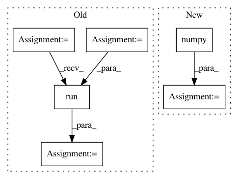

afbdf876423189a7e7db792515d7e9c817707f9c,tensorboard/plugins/scalar/scalars_plugin_test.py,ScalarsPluginTest,generate_run,#ScalarsPluginTest#Any#,117
Before Change
def generate_run(self, run_name):
tf.compat.v1.reset_default_graph()
sess = tf.compat.v1.Session()
placeholder = tf.compat.v1.placeholder(tf.float32, shape=[3])
if run_name == self._RUN_WITH_LEGACY_SCALARS:
tf.compat.v1.summary.scalar(self._LEGACY_SCALAR_TAG, tf.reduce_mean(input_tensor=placeholder))
elif run_name == self._RUN_WITH_SCALARS:
summary.op(self._SCALAR_TAG, tf.reduce_sum(input_tensor=placeholder),
display_name=self._DISPLAY_NAME,
description=self._DESCRIPTION)
elif run_name == self._RUN_WITH_HISTOGRAM:
tf.compat.v1.summary.histogram(self._HISTOGRAM_TAG, placeholder)
else:
assert False, "Invalid run name: %r" % run_name
summ = tf.compat.v1.summary.merge_all()
subdir = os.path.join(self.logdir, run_name)
with test_util.FileWriterCache.get(subdir) as writer:
writer.add_graph(sess.graph)
for step in xrange(self._STEPS):
feed_dict = {placeholder: [1 + step, 2 + step, 3 + step]}
s = sess.run(summ, feed_dict=feed_dict)
writer.add_summary(s, global_step=step)
def test_index(self):
self.set_up_with_runs([self._RUN_WITH_LEGACY_SCALARS,
After Change
self._LEGACY_SCALAR_TAG, tf.reduce_mean(data),
).numpy()
elif run_name == self._RUN_WITH_SCALARS:
summ = summary.op(
self._SCALAR_TAG,
tf.reduce_sum(data),
display_name=self._DISPLAY_NAME,
description=self._DESCRIPTION,
).numpy()
elif run_name == self._RUN_WITH_HISTOGRAM:
summ = tf.compat.v1.summary.histogram(
self._HISTOGRAM_TAG, data
).numpy()
In pattern: SUPERPATTERN
Frequency: 6
Non-data size: 6
Instances
Project Name: tensorflow/tensorboard
Commit Name: afbdf876423189a7e7db792515d7e9c817707f9c
Time: 2019-08-09
Author: wchargin@gmail.com
File Name: tensorboard/plugins/scalar/scalars_plugin_test.py
Class Name: ScalarsPluginTest
Method Name: generate_run
Project Name: calico/basenji
Commit Name: 28f6dbec4bee2572fa7f94445d63cebb2de6dc9b
Time: 2019-09-27
Author: drk@calicolabs.com
File Name: bin/tfr_hdf5.py
Class Name:
Method Name: read_tfr
Project Name: tensorlayer/tensorlayer
Commit Name: f2073333b710a340403843763ba60eb1e6699916
Time: 2019-04-11
Author: rundi_wu@pku.edu.cn
File Name: examples/data_process/tutorial_tf_dataset_voc.py
Class Name:
Method Name:
Project Name: onnx/onnx-tensorflow
Commit Name: 054095d922edda5134e520522bc82a1b95cc5bd4
Time: 2020-09-09
Author: smonov@gmail.com
File Name: onnx_tf/backend.py
Class Name: TensorflowBackend
Method Name: run_node
Project Name: tensorlayer/srgan
Commit Name: 87ad8f5eb43629954755893fcb2674e53f8dc982
Time: 2019-05-08
Author: dhsig552@163.com
File Name: main.py
Class Name:
Method Name: evaluate
Project Name: onnx/onnx-tensorflow
Commit Name: 054095d922edda5134e520522bc82a1b95cc5bd4
Time: 2020-09-09
Author: smonov@gmail.com
File Name: onnx_tf/backend_rep.py
Class Name: TensorflowRep
Method Name: run